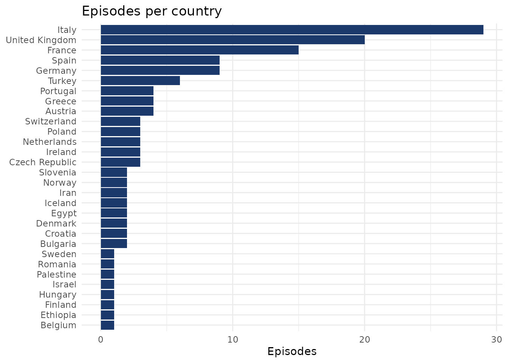

library(steves)
library(dplyr)
#>
#> Attaching package: 'dplyr'
#> The following objects are masked from 'package:stats':
#>
#> filter, lag
#> The following objects are masked from 'package:base':
#>
#> intersect, setdiff, setequal, union
library(ggplot2)What’s in episodes?
glimpse(episodes)
#> Rows: 159
#> Columns: 38
#> $ overall_episode <int> 1, 2, 3, 4, 5, 6, 7, 8, 9, 10, 11, 12, 13, 14…
#> $ season <int> 1, 1, 1, 1, 1, 1, 1, 1, 1, 1, 1, 1, 1, 1, 1, …
#> $ episode_in_season <int> 1, 2, 3, 4, 5, 6, 7, 8, 9, 10, 11, 12, 13, 14…
#> $ season_episode_code <chr> "S01E01", "S01E02", "S01E03", "S01E04", "S01E…
#> $ title <chr> "Portugal's Heartland", "Paris: Grand and Int…
#> $ synopsis <chr> "Portugal; barnacles; fishing town; pilgrims;…
#> $ theme_tags <chr> "Religion & Spirituality", "Art & Architectur…
#> $ episode_type <chr> "Standard", "Standard", "Standard", "Standard…
#> $ is_retired <chr> "Yes", "Yes", "Yes", "Yes", "Yes", "No", "Yes…
#> $ primary_country <chr> "Portugal", "France", "United Kingdom", "Unit…
#> $ all_countries <chr> "Portugal", "France", "United Kingdom", "Unit…
#> $ region <chr> "Iberia", "Western Europe", "British Isles", …
#> $ primary_destination <chr> "Heartland Portugal", "Paris", "South England…
#> $ iso2 <chr> "PT", "FR", "GB", "GB", "IT", "DE", "GB", "BG…
#> $ flag <chr> "🇵🇹", "🇫🇷", "🇬🇧", "🇬🇧", "🇮🇹", "🇩🇪", "🇬🇧", "🇧🇬", "🇮🇹", …
#> $ lat <dbl> 39.66216, 48.85350, 51.35474, 53.25199, 41.89…
#> $ long <dbl> -8.1353519, 2.3483915, -0.1353155, -3.0420904…
#> $ geo_match <chr> "country", "full", "full", "full", "full", "s…
#> $ original_air_date <date> 2000-09-03, 2000-09-10, 2000-09-17, 2000-09-…
#> $ air_year <int> 2000, 2000, 2000, 2000, 2000, 2000, 2000, 200…
#> $ air_month <ord> Sep, Sep, Sep, Sep, Oct, Oct, Oct, Oct, Oct, …
#> $ air_weekday <ord> Sun, Sun, Sun, Sun, Sun, Sun, Sun, Sun, Sun, …
#> $ days_since_premiere <int> 0, 7, 14, 21, 28, 35, 42, 49, 56, 63, 70, 77,…
#> $ gap_since_prev_episode_d <int> NA, 7, 7, 7, 7, 7, 7, 7, 7, 7, 7, 7, 7, 7, 7,…
#> $ imdb_tconst <chr> "tt1453776", "tt1453775", "tt1453778", "tt145…
#> $ imdb_url <chr> "https://www.imdb.com/title/tt1453776/", "htt…
#> $ imdb_rating <dbl> 6.4, 7.2, 8.3, 8.0, 7.4, 7.8, 7.7, 7.2, 7.2, …
#> $ imdb_votes <int> 18, 12, 15, 12, 12, 18, 15, 10, 10, 8, 11, NA…
#> $ imdb_rating_shrunk <dbl> 7.168969, 7.563797, 7.958889, 7.830464, 7.630…
#> $ imdb_low_votes <lgl> FALSE, FALSE, FALSE, FALSE, FALSE, FALSE, FAL…
#> $ image_url <chr> "https://i.ytimg.com/vi/0IvZOZtjMYM/maxresdef…
#> $ image_source <chr> "ricksteves.com", "ricksteves.com", NA, "rick…
#> $ best_summary <chr> "Portugal has an oversized history, fascinati…
#> $ summary_source <chr> "ricksteves.com", "ricksteves.com", "tvmaze",…
#> $ best_runtime <int> 26, 26, 26, 26, 26, 26, 26, 26, 26, 26, 26, 2…
#> $ watch_url <chr> "https://www.ricksteves.com/watch-read-listen…
#> $ tvmaze_url <chr> "https://www.tvmaze.com/episodes/525238/rick-…
#> $ tvmaze_id <int> 525238, 525239, 525241, 525242, 525243, 52524…One row per episode, 13 seasons, 159 episodes spanning 2000–2025. Most columns fall into a few groups:
-
Identity:
overall_episode,season,episode_in_season,season_episode_code. -
Editorial:
title,synopsis,theme_tags,region,primary_destination,episode_type,is_retired. -
Geography:
primary_country,all_countries,iso2,flag,lat,long,geo_match. -
Dates:
original_air_date,air_year,air_month,air_weekday, plus derived gap and span fields. -
IMDB:
imdb_rating,imdb_votes,imdb_rating_shrunk,imdb_low_votes,imdb_url,imdb_tconst. -
Canonical bests:
image_url,best_summary,best_runtime, plus*_sourceprovenance flags.
How often does Rick Steves visit each country?
episodes |>
count(primary_country, flag, sort = TRUE) |>
head(10)
#> # A tibble: 10 × 3
#> primary_country flag n
#> <chr> <chr> <int>
#> 1 Italy 🇮🇹 29
#> 2 Multiple 🌍 20
#> 3 United Kingdom 🇬🇧 20
#> 4 France 🇫🇷 15
#> 5 Germany 🇩🇪 9
#> 6 Spain 🇪🇸 9
#> 7 Turkey 🇹🇷 6
#> 8 Austria 🇦🇹 4
#> 9 Greece 🇬🇷 4
#> 10 Portugal 🇵🇹 4
episodes |>
count(primary_country) |>
filter(primary_country != "Multiple") |>
mutate(primary_country = forcats::fct_reorder(primary_country, n)) |>
ggplot(aes(n, primary_country)) +
geom_col(fill = "#1B3A6B") +
labs(title = "Episodes per country",
x = "Episodes", y = NULL) +
theme_minimal()
Are highly-rated episodes a particular kind of place?
imdb_rating_shrunk pulls noisy ratings (some episodes
have only 5 votes) toward the show mean. It is always populated, so it
sorts cleanly.
episodes |>
filter(!is.na(lat)) |>
group_by(region) |>
summarise(n = n(),
median_rating = median(imdb_rating_shrunk)) |>
arrange(desc(median_rating))
#> # A tibble: 11 × 3
#> region n median_rating
#> <chr> <int> <dbl>
#> 1 Multi-Region 9 7.91
#> 2 British Isles 23 7.87
#> 3 Balkans 4 7.78
#> 4 Alpine 8 7.77
#> 5 Scandinavia 7 7.77
#> 6 Western Europe 26 7.77
#> 7 Beyond Europe 13 7.72
#> 8 Eastern Europe 10 7.70
#> 9 Mediterranean 34 7.70
#> 10 Iberia 13 7.59
#> 11 Baltic 1 7.50